About us
Tacokombi was conceptualised by Valjean Joubert after a life-changing trip made to California
in 2009. If you haven’t already discovered the wonder that is Mexican street food, then you’re
in for a real treat.
Tacokombi is a favourite amongst market goers, appearing at various
school, sporting, church and other events as well as festivals and markets in and around
Pretoria.
The catering service offering for corporate and private events keeps their calendar very
busy. With the high demand for smaller functions the Tacobar was introduced in 2020 as an
easy to set up option where space is limited.
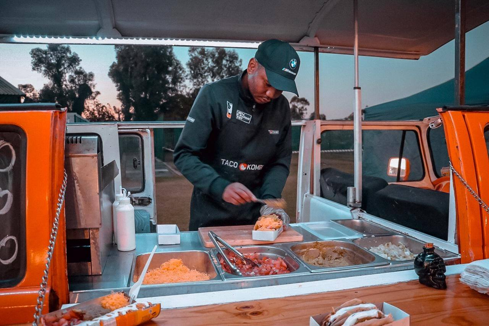
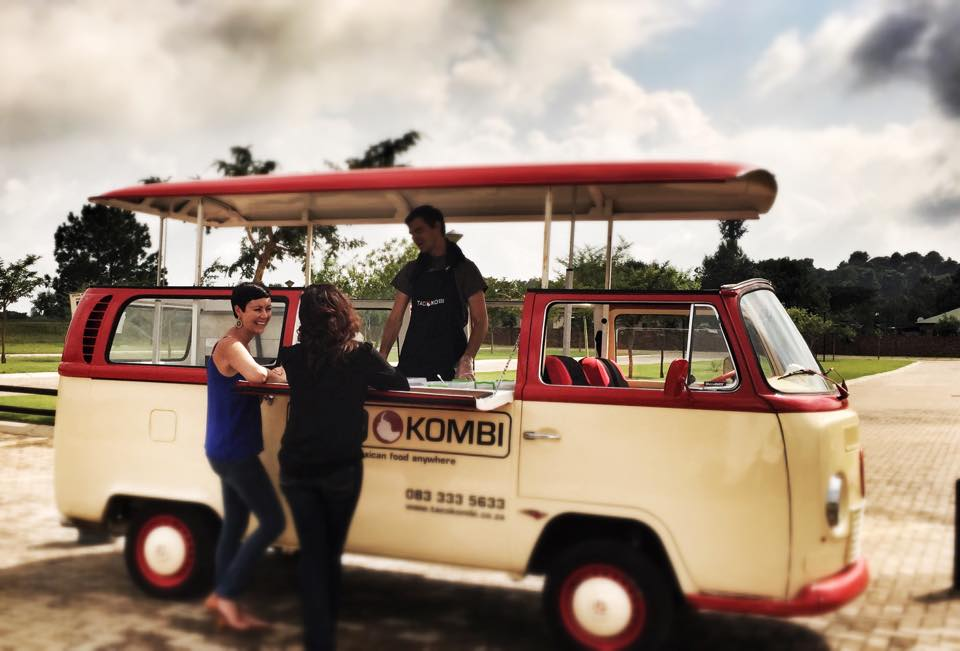
Regular fixtures on the menu include the chicken or beef tacos, with hot, tasty, fresh tortillas served with
fresh salsa, delicious secret sauce, avocado, lettuce, jalapeños and cheddar cheese.
For market goers, the extra-cheesy nachos are a favourite.
For the catered function menu, their famous fiery jalapeño poppers oozing with cheese,
lightly battered and fried, is a regular menu addition.
For your next event, no matter how big or small, contact us for a quote to
secure your booking well in advance.
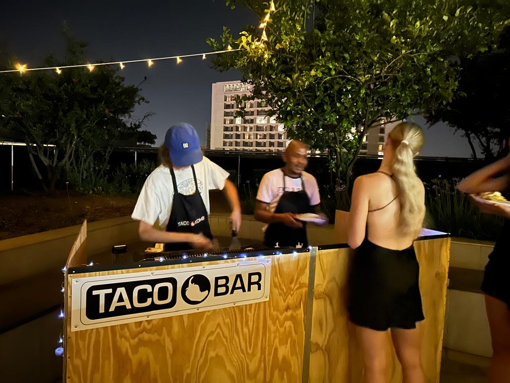
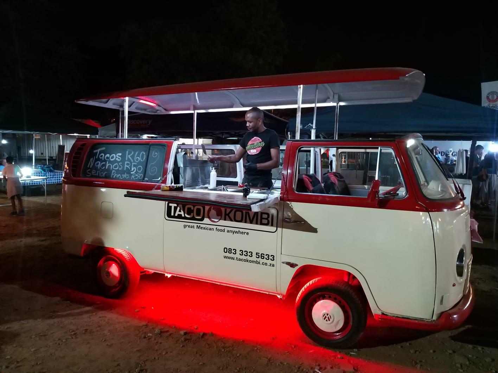
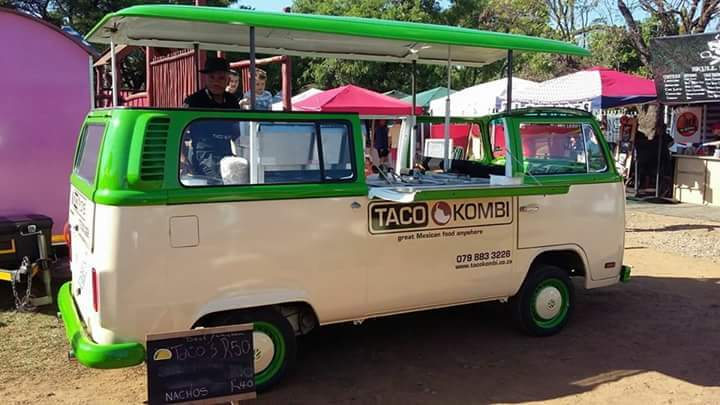
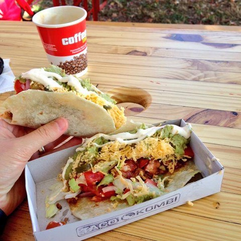
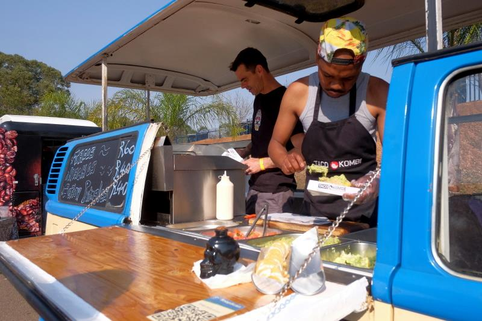
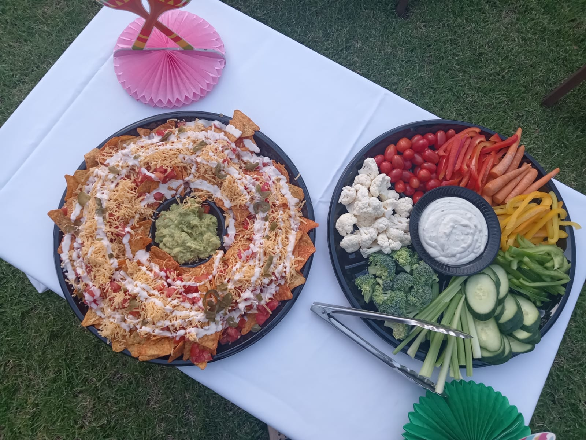
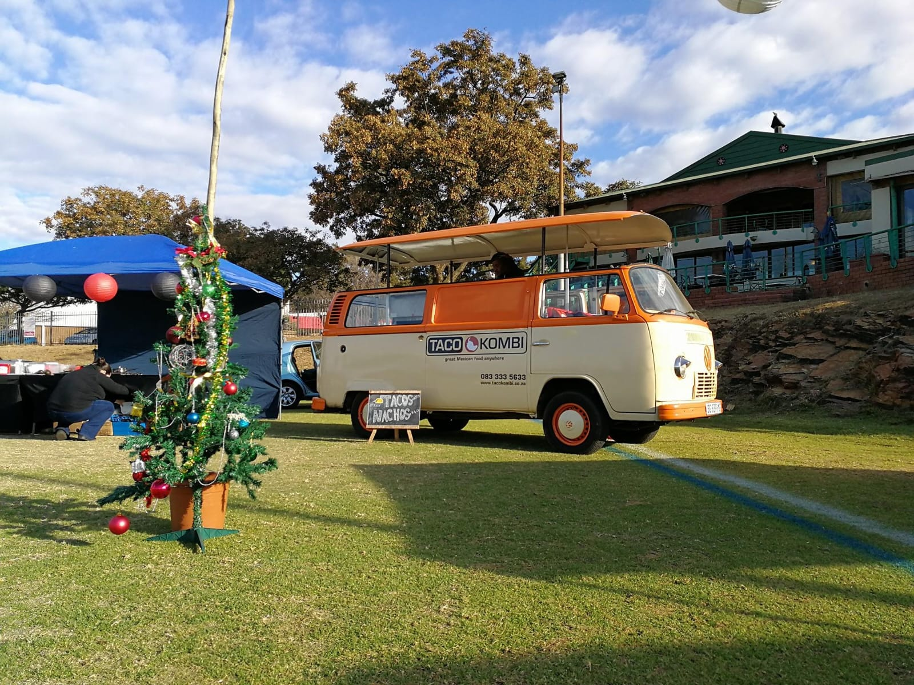
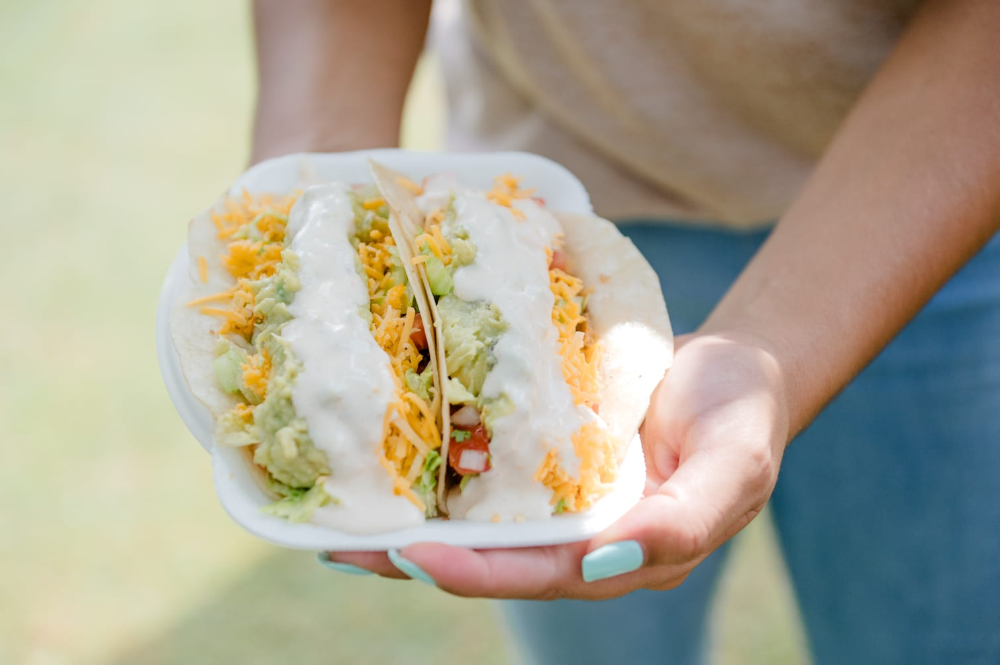
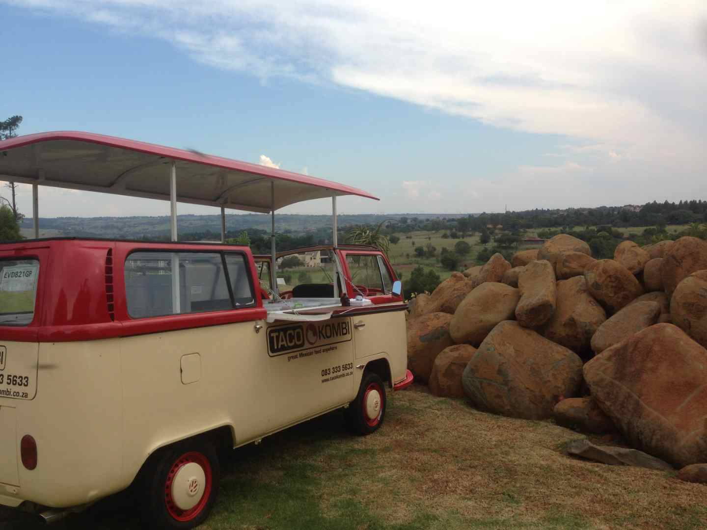
more about us
Voted best tacos .. by some guy that loves tacos…
RASA Rosetta award of excellence 2019 & 2023
Prestige Awards, Winner Best Mexican Eatery Gauteng South Africa 2020, 21, 22, & 23
LUX Life Awards, Winner Best Mexican Eatery Pretoria South-Africa 2022 & 23
Winner best Mexican dish 2017 Tequila Festival
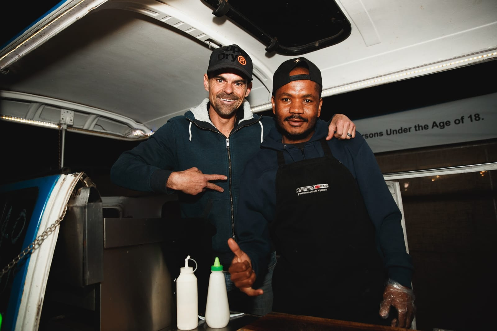